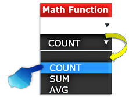
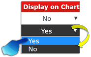

System ►CRITERIA COLUMNS
Module Name: Criteria Columns Page
Description: Manage Criteria Columns Page
CRITERIA COLUMNS
»

COLUMN NAME
» Refers to the Properties/Sub Properties/Attributes found in every template.

ALIAS NAME
» Alias refers to the situation wherein the same memory location can be accessed using different names.

OPERATOR NAME
» The Operators perform specific arithmetic, relational, or logical operations to comparee and produce final result.


LIST VALUE
» Provides a link for selecting a list of attribute values when the "IN LIST" operator name is selected.

COLUMN VALUES
» Values defined based from what is selected in Column Name and Operator Name. Refer to the table
below as a guide where values can be defined based on selected Operator Name.

MATH FUNCTION
» Functions that return a single value after performing calculations on a group of values.


REMOVE DUPLICATE
» Identifying and removing duplicate rows/data if necessary or depending on the criteria.

DISPLAY ON CHART
» If "YES" is selected, property/attribute in column name will be displayed on the chart otherwise "NO".

IS FROM TO
» A condition where a criteria gather data that satisfies both FROM and TO and vice versa.

LOGICAL OPERATOR
» Also called as Boolean operators that operates with truth (Boolean) values and the result is always a truth value (true or false). These operators are useful when combining several conditions into a single statement.


LEVEL NUMBER
»

IS LEGEND
»
LEGEND LABEL
»

LIST VALUE
»
GREY OUT?
»

COLOR CODE
» Color Code are used for color comparisons of a certain data or attributes.